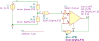

"VampBiasTotal"
.detector V_out
R1 1 2 R value={R_a} noisetemp=0 noiseflow=0 dcvar={sigma_R^2} dcvarlot=0
R2 2 0 R value={R_b} noisetemp=0 noiseflow=0 dcvar={sigma_R^2} dcvarlot=0
R3 2 3 R value={R_c} noisetemp=0 noiseflow=0 dcvar={sigma_R^2} dcvarlot=0
R4 4 out R value={(A_v-1)*R} noisetemp=0 noiseflow=0 dcvar={sigma_R^2} dcvarlot=0
V1 1 0 V value=0 noise=0 dc={V_P} dcvar=0
X1 3 4 out 0 O_dcvar svo={v_off} sio={i_off} sib={sigma_ib*I_b} iib={I_b}
.end
| RefDes | Nodes | Refs | Model | Param | Symbolic | Numeric |
|---|---|---|---|---|---|---|
| F1_X1 | 4 0 5_X1 0 | F | value | $1$ | $1.0$ | |
| Ib_X1 | 3 5_X1 | I | dc | $I_{b}$ | $I_{b}$ | |
| dcvar | $I_{b}^{2} \sigma_{ib}^{2}$ | $I_{b}^{2} \sigma_{ib}^{2}$ | ||||
| value | $0$ | $0$ | ||||
| noise | $0$ | $0$ | ||||
| Io_X1 | 3 4 | I | dcvar | $i_{off}^{2}$ | $i_{off}^{2}$ | |
| value | $0$ | $0$ | ||||
| dc | $0$ | $0$ | ||||
| noise | $0$ | $0$ | ||||
| N1_X1 | out 0 3_X1 4 | N | ||||
| R1 | 1 2 | R | value | $R_{a}$ | $R_{a}$ | |
| noisetemp | $0$ | $0$ | ||||
| noiseflow | $0$ | $0$ | ||||
| dcvar | $\sigma_{R}^{2}$ | $\sigma_{R}^{2}$ | ||||
| dcvarlot | $0$ | $0$ | ||||
| R2 | 2 0 | R | value | $R_{b}$ | $R_{b}$ | |
| noisetemp | $0$ | $0$ | ||||
| noiseflow | $0$ | $0$ | ||||
| dcvar | $\sigma_{R}^{2}$ | $\sigma_{R}^{2}$ | ||||
| dcvarlot | $0$ | $0$ | ||||
| R3 | 2 3 | R | value | $R_{c}$ | $R_{c}$ | |
| noisetemp | $0$ | $0$ | ||||
| noiseflow | $0$ | $0$ | ||||
| dcvar | $\sigma_{R}^{2}$ | $\sigma_{R}^{2}$ | ||||
| dcvarlot | $0$ | $0$ | ||||
| R4 | 4 out | R | value | $R \left(A_{v} - 1\right)$ | $R \left(A_{v} - 1.0\right)$ | |
| noisetemp | $0$ | $0$ | ||||
| noiseflow | $0$ | $0$ | ||||
| dcvar | $\sigma_{R}^{2}$ | $\sigma_{R}^{2}$ | ||||
| dcvarlot | $0$ | $0$ | ||||
| V1 | 1 0 | V | value | $0$ | $0$ | |
| noise | $0$ | $0$ | ||||
| dc | $V_{P}$ | $V_{P}$ | ||||
| dcvar | $0$ | $0$ | ||||
| Vo_X1 | 3 3_X1 | V | dcvar | $v_{off}^{2}$ | $v_{off}^{2}$ | |
| value | $0$ | $0$ | ||||
| dc | $0$ | $0$ | ||||
| noise | $0$ | $0$ |
| Name | Symbolic | Numeric |
|---|
| Name |
|---|
| $\sigma_{ib}$ |
| $R_{a}$ |
| $R$ |
| $V_{P}$ |
| $v_{off}$ |
| $\sigma_{R}$ |
| $I_{b}$ |
| $A_{v}$ |
| $R_{c}$ |
| $i_{off}$ |
| $R_{b}$ |
Go to VampBiasTotal_index
SLiCAP: Symbolic Linear Circuit Analysis Program, Version 2.0.1 © 2009-2024 SLiCAP development team
For documentation, examples, support, updates and courses please visit: analog-electronics.tudelft.nl
Last project update: 2024-10-20 16:54:18